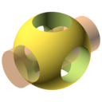
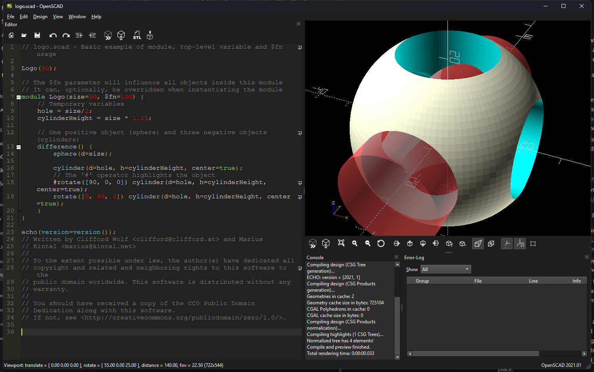

Skriptový 3D CAD: díl popíšete v jazyce OpenSCAD a program ho spočítá a vyexportuje do STL nebo 3MF. Poslední tagovaná verze 2021.01 přeložená moderními nástroji – Visual Studio 2026, CMake + vcpkg, C++17 a Qt 6 s tmavým režimem – s instalátorem pro Windows 11.
Editor, náhled a konzole v tmavém režimu (styl Fusion sleduje nastavení Windows). Vlevo kód příkladu logo.scad, vpravo výsledek.

Díl popíšete krátkým skriptem: krychle, koule, válce, vytažení 2D profilů, sjednocení, rozdíl a průnik. Změníte číslo, změní se díl – ideální pro parametrické součástky do 3D tisku.
Jazyk ani geometrické jádro CGAL se nezměnily. Vaše stávající soubory a knihovny se vyhodnotí stejně, jen v programu přeloženém pro dnešní Windows.
Rozhraní na Qt 6.10 se stylem Fusion, které sleduje světlý nebo tmavý motiv Windows; barevná schémata editoru i náhledu se přepnou s ním.
STL, 3MF, AMF, OFF, DXF, SVG, PDF a PNG. Odeslání do OctoPrintu nebo tiskové služby přímo z programu.
Proměnné ze skriptu se zobrazí jako formulář s posuvníky a výběry; sady hodnot jde uložit a sdílet s modelem.
openscad-cli.exe renderuje a exportuje bez okna – pro dávky, skripty a CI. Text funguje díky přibaleným fontům Liberation a fontům z Windows.
Nainstaluje GUI, příkazovou verzi, příklady, fonty a knihovny, nabídne asociaci souborů .scad a přidání do PATH; Visual C++ runtime přibalí a nainstaluje jen když chybí.
Jeden PowerShell skript stáhne vcpkg, přeloží všechny knihovny a sestaví program ve Visual Studiu 2022 nebo 2026. Na Ubuntu 24.04 stačí distribuční balíčky a dva příkazy CMake.
GPL 2 nebo novější, zdrojové kódy a historie změn oproti čistému release 2021.01 jsou na GitHubu; Windows i Linux se překládají automaticky na GitHub Actions.
openscad-cli.exe -o dil.stl dil.scad, parametry přes -D, --export-format, -p pro sady z Customizeru, PNG s --imgsize a --cameraZdarma, bez reklam a bez registrace.
/CURRENTUSER).OpenSCAD.exe, příkazovou verzi openscad-cli.exe, příklady, fonty a knihovny.sudo ./tools/linux-deps.sh nainstaluje kompilátor, CMake, CGAL, Qt 6 a QScintillu z balíčků distribuce.cmake --preset linux-release a cmake --build --preset linux-release přeloží GUI i příkazovou verzi.build-msvc.ps1; první běh přeloží knihovny (asi hodina), další trvají sekundy.Tichá instalace: OpenSCAD-2021.01-modern.1-win64-setup.exe /VERYSILENT /NORESTART. Odinstalace přes Nastavení Windows › Aplikace.
Poslední tři verze; starší jsou na stránce Historie změn.
Načítám…
| F4 | Znovu načíst soubor a náhled |
| F5 | Náhled (OpenCSG, rychlý) |
| F6 | Render (CGAL, přesná geometrie pro export) |
| F7 | Export do STL |
| F8 | 3D tisk (OctoPrint nebo tisková služba) |
| F9 / F10 / F11 / F12 | Zobrazení: náhled / plochy / drátový model / Thrown Together |
| Ctrl+1 / Ctrl+2 / Ctrl+3 | Hrany / osy / nitkový kříž |
| Ctrl+4 až Ctrl+9 | Pohled shora, zdola, zleva, zprava, zepředu, zezadu |
| Ctrl+0 | Diagonální pohled |
| Ctrl+N / Ctrl+O / Ctrl+S | Nový / otevřít / uložit soubor |
| Ctrl+R | Znovu načíst soubor |
| Ctrl+W | Zavřít záložku |
| Ctrl+F / Ctrl+G | Hledat / najít další |
| Ctrl+I / Ctrl+D | Odsadit / zakomentovat výběr |
| Ctrl+F2 / F2 | Záložka v editoru / skok na další záložku |
| Ctrl+T | Zkopírovat posun kamery (viewport translation) |